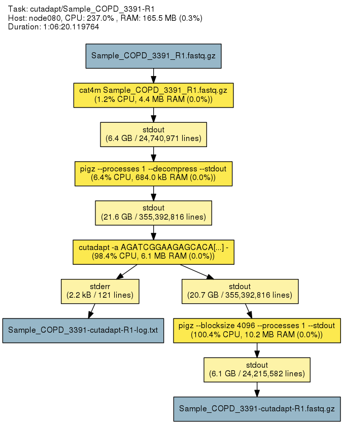
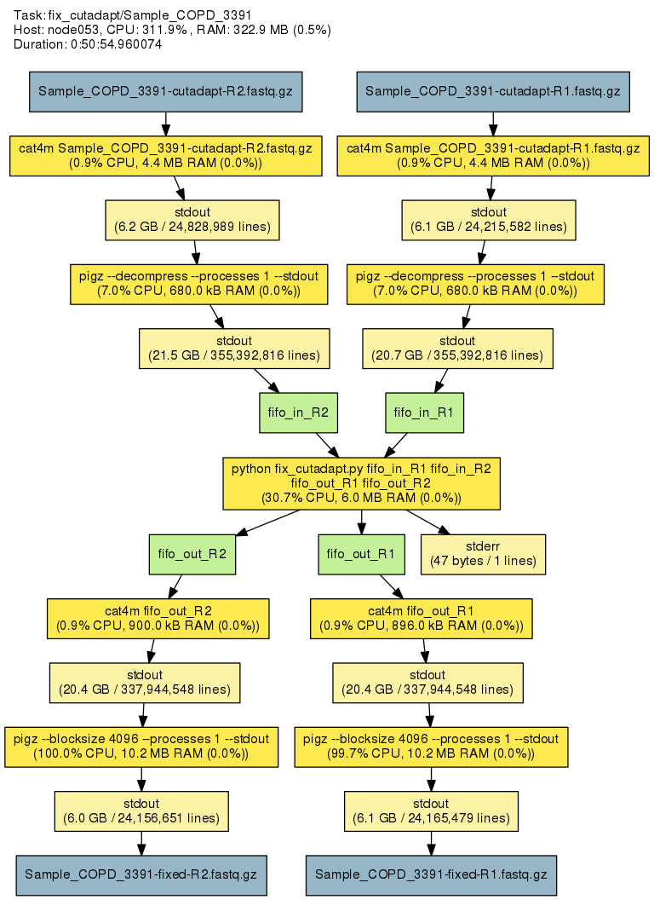

Annotation Files¶
The annotation files contain detailed information about every output file. Also, the Git SHA1 hash of the uap repository at the time of data processing is included. The executed commands are listed. Annotation contains information about inter-process streams and output files, including SHA1 and SHA256 checksums, file sizes, and line counts as well.
Upon successful completion of a task, an extensive YAML-formatted annotation
is placed next to the output files in a file called
.[task_id]-annotation.yaml.
Also, for every output file, a symbolic link to this file is created:
.[output_filename].annotation.yaml.
Finally, the annotation is rendered via GraphViz, if available. Rendering can also be done at a later time using annotations as input (see uap’s render subcommand). The annotation can be used to determine at a later time what exactly happened. Also, annotations may help to identify bottlenecks.
| 
Annotation graph of a |

In this graph, it becomes evident that
the |
{kind=link}
{kind=link}
known_paths¶
Contains information about all directories/files used during processing a run. uap calculates the SHA256 hexdigest for each known file with the designation ‘output’ aka. output/result files.